Simulink® Bus Signals
This interactive demonstration introduces you to the following Simulink® concepts:
- Distinguishing vector, matrix, and bus/composite signals
- Understanding signal line formats
- Displaying and understanding signal dimensions
- Using the Bus Creator and the Bus Selector blocks
- Viewing matrix signals on a Simulink Scope
- Highlighting blocks in the Simulink diagram
Contents
Model Description

The left side of the busdemo model contains five source blocks from the Simulink Sources library. Each block generates a scalar output signal, a signal with a width of one, that is appropriately labeled on the diagram.
The output of the Chirp Signal block is passed into a Goto block whose Tag is set to A.
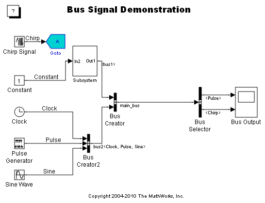The associated From block is found inside of the Subsystem block.
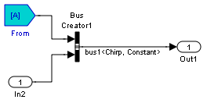Also inside the Subsystem block, you'll see that the Chirp signal and the output of the Constant block are bundled together into a bus using a Bus Creator block (found in the Simulink Signal Routing library).
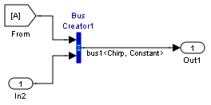Similarly, the three signals from the Clock, Pulse Generator, Sine Wave blocks are bundled together using another Bus Creator block.

This Bus Creator block is labeled Bus Creator2.
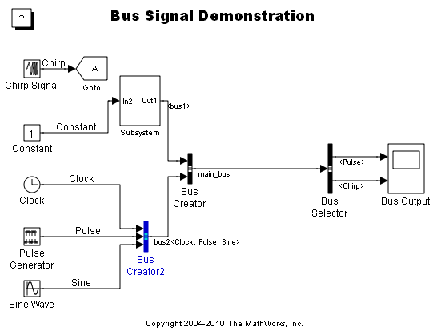The two bus signals, labeled bus1 and bus2, are then bundled together using a third Bus Creator block to create the nested bus signal labeled main_bus.
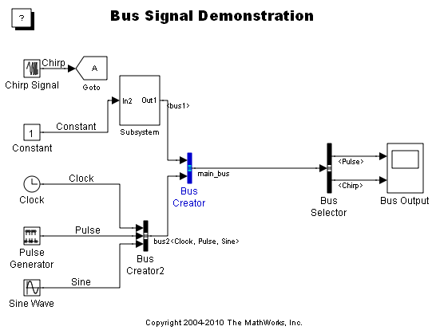The bundled signal from the final Bus Creator is then passed into the Bus Selector block.
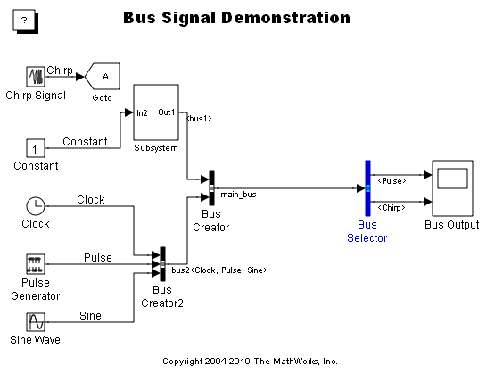The Bus Selector block extracts the Pulse and Chirp signals from the original bundle of signals. These two signals are finally displayed on a Simulink Scope with two axes.
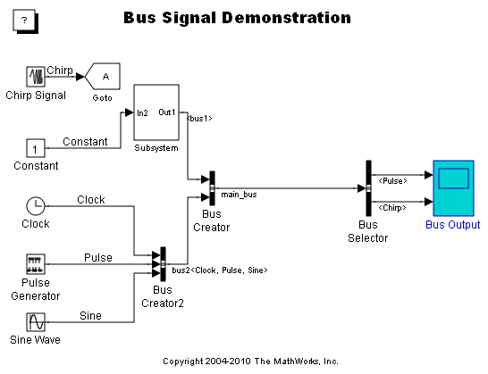The Pulse signal is shown on the top axis and the Chirp signal on the bottom axis.
You can run the simulation to see the output of the Chirp and Pulse blocks on the Scope.
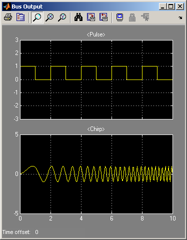Note: This model uses Bus Creator and Bus Selector blocks instead of Mux and Demux blocks for a variety reasons. One important motivation is that bus signals are very efficient, as only the signals chosen in the Bus Selector are passed around the diagram during a simulation. Another consideration is that the two Bus blocks are configured using the signal names, allowing you to create a Simulink diagram that is easier to read.
Bus signals and line formats in Simulink
After running the simulation, look at the lines in busdemo.mdl. Notice that the signal connecting the Bus Creator and Bus Selector blocks is drawn with three lines, as shown below.
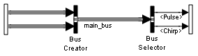This line format indicates that the signal is a bus signal. A bus signal represents a set of signals, analogous to a bundle of wires tied together. The bus signal can behave in one of two ways, either as a vector signal or as a composite signal, based on the size and shape of the signals bundled into the bus signal.
To understand this better, display the signal dimensions by checking the Signal Dimensions item in the Port/Signal Displays submenu of the Simulink diagram's Format menu. You should notice that the label "5{5}" appears on the bus signal, as shown below.
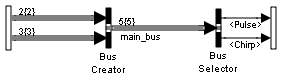The number before the braces tells you how many lines were bundled together to create that particular bus signal. For example, the output of the Bus Creator2 block was created from the three lines from the Clock, Pulse, and Sine Wave blocks. The number inside of the braces tells you how many total signals are contained in the bus. In the case of the bus2 signal, each output from the Source blocks is a scalar, so the bus contains a total of three signals, one from each line.
All the bus signal in this model are treated like vector signals because each individual signal in the bus is a scalar. As such, you can pass the bus signal into any Simulink block that accepts vector inputs, such as a Gain, Sum, Integer, etc.
Bus signals are also treated as vector signals when all the individual signals in the bus are either scalars or 1-dimensional vectors, as you will see below.
Vector signals in Simulink
You can change the Sine Wave block to output a vector of signals, instead of a scalar.
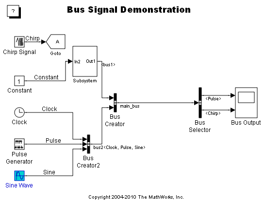To do this, first open the Sine Wave block by double clicking on the block in the diagram. This opens the Block Parameters dialog associated with the Sine Wave block.
The first field in the Block Parameters dialog is Amplitude. You can change the value in this field to a vector, using the following commands.
1 Type [1 2] into the Amplitude field.
2 Apply the changes and close the dialog by clicking the OK button.
3 Update the Simulink diagram by selecting the Update Diagram command from the model's Edit menu.
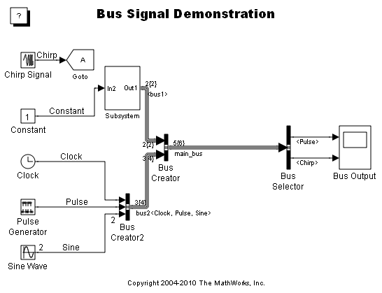The line coming out of the Sine Wave block now has a "2" above it, indicating that it carries a vector, or 1-dimensional, signal with two elements. Notice, now, that the input signal to the Bus Selector block is labeled with "5{6}". The 5 before the braces tells you that there are still five signals bundled together in the bus signal. Since one of these signals is a vector with two elements, the total width of the bus signal is now six, the value inside the braces.
The bus signal is still treated as a vector and can be passed to any Simulink block that accepts vector signals. In fact, as long as the bus signal consists solely of scalars and 1-dimensional vectors, it will be treated as a vector signal. As you will soon see, there is one more condition on when bus signals are treated as vectors.
Row and column matrix signals in Simulink
By default, the signals in your Simulink diagram are 1-dimensional vectors. You can, however, introduce 2-dimensional matrices into your diagram. To demonstrate this, change the Sine Wave block so it outputs a matrix signal instead of the vector you previously entered.
To do this open Sine Wave block by double clicking on the block. At the bottom of the dialog (and on the bottom of all Source block dialogs) you will see the Interpret vector parameters as 1-D check box.
- When this box is checked, Simulink interprets any row or column vector you type into the Block Parameters dialog as a 1-dimensional array.
- When this box is not checked, Simulink interprets any row or column vector you type into the Block Parameters dialog as a 2-dimensional matrix. Note: If you are working in this mode, then all the vectors and matrices you enter into the Block Parameters dialog must have consistent dimensions.
To illustrate this, make the output of the Sine Wave 2-dimensional using the following steps.
1. Uncheck the Interpret vector parameters as 1-D check box
2. Apply the changes and close the dialog by clicking the OK button.
3. Update the Simulink diagram to see the changes take effect in the signal dimension labels.
Notice that the output signal of the Sine Wave block is now labeled "[1x2]". Simulink is actually carrying a 2-D matrix signal along that line! The input signal to the Bus Selector block is still labeled with "5{6}" as it contains five signals with a total of six elements. In this case, however, the fifth signal in the bus is actually a row matrix.
This is the final case where the bus signal is treated as a vector; when all signals in the bus are either scalars, 1-dimensional vectors, or either row or column matrices. If the bus contains both row and column matrix signals then the bus signal is no longer a vector signal. Instead, it is treated as a composite signal, discussed in a moment.
Matrix signals in Simulink
You can enter any 2-dimensional matrix into the Source blocks. For example, to enter a 2x2 matrix open the Sine Wave block dialog, enter [1 2; 3 4] in the Amplitude parameter, and update the diagram.
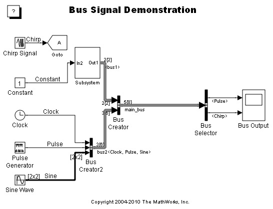The signal coming out of the Sine Wave block now has the dimensions [2x2].
Note: When you enter an m-by-n matrix where neither m nor n is one, the block's output will always be a matrix regardless of the current state of the Interpret vector parameters as 1-D check box. The check box only applies to vector parameters, where either m or n is one.
The signal going into the Bus Selector is now labeled with "5{8}". It contains 5 signals, but one of those signals has four elements for a total width of eight. In this case, the bus signal is treated as a composite signal. In fact, as soon as any of the signals in the bus contain a 2-dimensional signal that is neither a row nor column matrix, the bus signal is automatically treated as a composite signal.
A composite signal is useful for bundling data into a single wire to pass through the Simulink diagram. However, a composite signal cannot be passed into most Simulink blocks. In fact, composite signals can only be passed into virtual blocks, such as the Bus Selector, Subsystem, Goto, Demux, etc.
To summarize, a bus signal is treated as a composite signal when either of the following conditions is met.
1. The bus contains a signal that is a row matrix and another signal that is a column matrix.
2. The bus contains one or more [m x n] matrices where both m and n are greater than one.
Using the Bus Creator Block
To understand more about how the bus signal is structured, open the Bus Creator block.
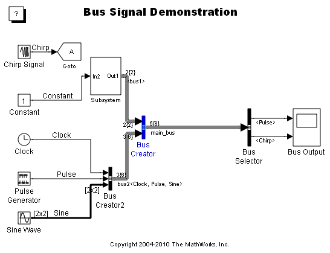This block has two inputs, each of which is itself a bus signal. The two bus signals, labeled bus1 and bus2, are listed in the Signals in bus list, preceded by a plus sign. If you expand out the two bus signals by double-clicking in each top level node in the tree, you'll see the nested signals that make up the final bus.
The names used in the Signals in bus list are inherited from the signal names typed onto the Simulink diagram. If you want to locate the block a particular signal originated from, you can do the following.
1. Select, for example, the Pulse signal in the bus2 node.
2. Press the Find button to the right of the Signals in bus list.
3. Note that the Pulse Generator block is now highlighted.
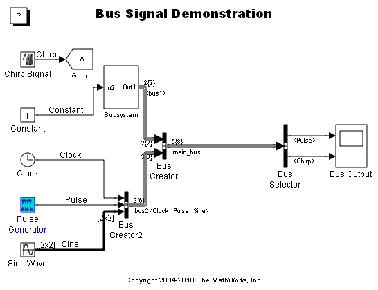The Bus Creator uses the signal name to determine the source of a particular signal in the bus
Using the Bus Selector Block
As the signal label indicates, the output of the Bus Creator block still consists of five signals, where the last element is the 2x2 matrix signal you previously entered. To illustrate this, you can configure the Bus Selector block to output the matrix signal from the Sine Wave block. To do this, first open the Bus Selector block by double clicking on the block.
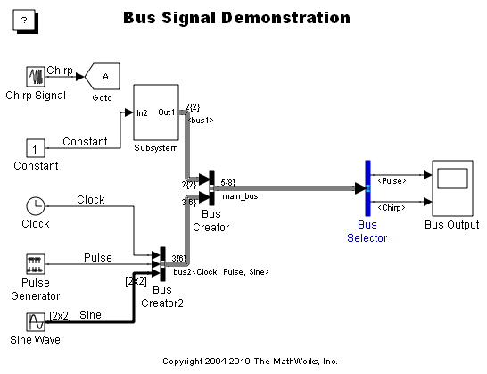- On the left side of this dialog, you see a list of all the signals passed into the Bus Selector block. You can click on the tree corresponding to a bus to see the source signals that the bus is composed of. The output signal of the Bus Creator is in turn composed of the two bus signals bus1 and bus2.
- On the right side, you see "Selected Signals" - a list of all the input signals that are to serve as the output for the Bus Selector block. To reference a signal corresponding to a specific input bus, use the dot-notation. For example, to access the Chirp input signal from bus1, use bus1.Chirp.
The following steps illustrate how you can specify the output signal list to correspond to the Pulse Generator and Sine Wave sources.
1. Highlight the bus1.Chirp signal in the Selected signals list and remove it by selecting Remove to the left of the list.
2. Highlight the bus2.Sine signal in the Signals in the bus list and add it to the Selected signals by choosing Select>>.
3. Apply these changes and close the dialog by selecting OK.
Now, run the simulation. The bottom axis on the Scope displays the four signals from the Sine Wave block.
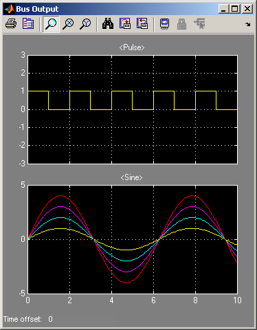Interesting Feature: HILITE_SYSTEM
Various blocks in the Simulink diagram highlighted when you clicked some of the links in this demonstration. This was done using the hilite_system function. The syntax is hilite_system(sys) where sys is the name of the block you want to highlight. There are a variety of different highlighting schemes, which you can find by looking at the help text for this command. Here are a few samples that highlight the Sine Wave block.
- hilite_system('busdemo/Sine Wave','find') Uses the highlighting scheme used by the Find dialog, which changes the background color.
- hilite_system('busdemo/Sine Wave','unique') Uses a highlighting scheme that changes the foreground color.
- hilite_system('busdemo/Sine Wave','none') Removes any highlighting.